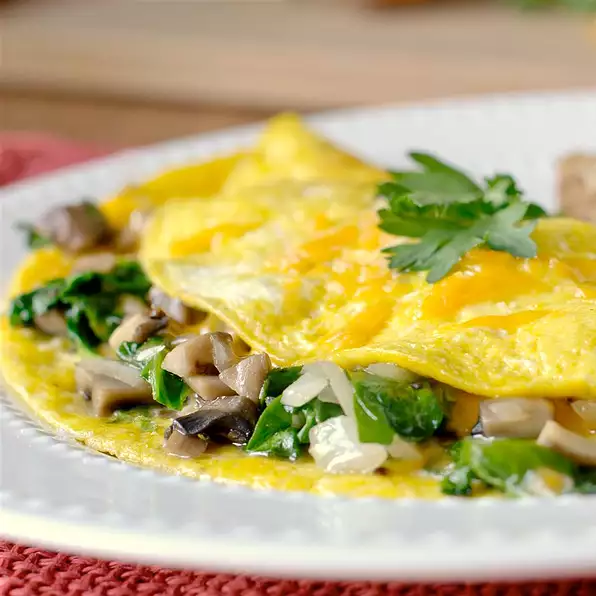

Mushroom Spinach Omelette

Ingredients
- 1 (8 ounce) carton liquid egg substitute
- 1 tablespoon shredded Cheddar cheese
- 1 tablespoon shredded Parmesan cheese
- 1/4 teaspoon salt
- 1/8 teaspoon ground black pepper
- 1/8 teaspoon garlic powder
- teaspoon red pepper flakes
- 1 teaspoon olive oil
- 1/2 cup chopped fresh mushrooms
- cup chopped fresh mushrooms
- cup chopped fresh spinach, or more to taste
Preparation Directions
Step 1
Whisk egg substitute, Cheddar cheese, Parmesan cheese, salt, black pepper, garlic powder, and red pepper flakes together in a bowl.
Step 2
Heat olive oil in a nonstick skillet over medium heat; cook and stir mushrooms and onion until tender, 4 to 5 minutes. Add spinach; cook until spinach wilts, 3 to 4 minutes. Pour in egg mixture; swirl pan around to evenly distribute egg mixture. Cook until egg is fully cooked and set in the middle, 5 to 10 minutes. Cut into wedges.
Nutrition Facts
Per Serving: 65 calories; protein 18.1g; carbohydrates 2.8g; fat 8.8g; cholesterol 7.8mg; sodium 584.4mg.
Back